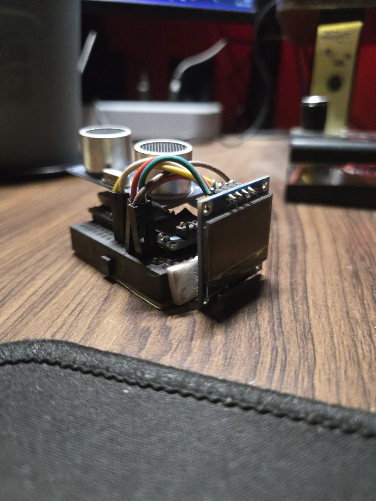

Fun project · Arduino · IoT
Curious Eye
A small desk gadget with a personality. Its screen stays off until you wave a hand over it, and then it starts watching you.
4parts
5behaviours
How it behaves.
The ultrasonic sensor keeps measuring how far away your hand is, and the Nano picks the eye animation to match.
- IdleThe display is off and the sensor quietly waits.
- Hand over itAn eye pops up on the screen.
- Hand closerThe eye looks towards your hand.
- Hand removedIt looks around for some time, then gets angry.
- Back to sleepThe screen turns off and waits for the next wave.
Built with.
Four simple parts, wired together on a breadboard.
HC-SR04 ultrasonic sensor
Sends out a burst of ultrasound and times the echo to measure the distance to your hand.
Arduino Nano V3.0 (CH340)
A compact Arduino board. The CH340 chip handles USB for programming and power, and the board runs the code that reads the sensor and draws the eyes.
Breadboard
Joins the sensor, display and Nano with jumper wires, so there is no soldering and changes are easy.
0.92″ I2C OLED display (white)
A small four-wire display (GND, VCC, SCL, SDA) that shows the eyes.
See it in action.
